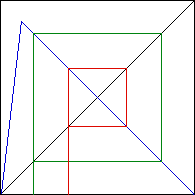
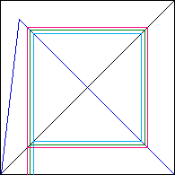

| 5. (a) Here are two distinct 2-cycles, one shown by the red graphical iteration track, one by the green graphical iteration track |
|  |
| (b) These cycles are neither stable nor unstable. The pink and The light blue graphical iterations show that nearby points get neither closer to nor farther away from the green cycle. A similar argument would work for the red cycle. |
|  |
Return to Homework 8 Practice.